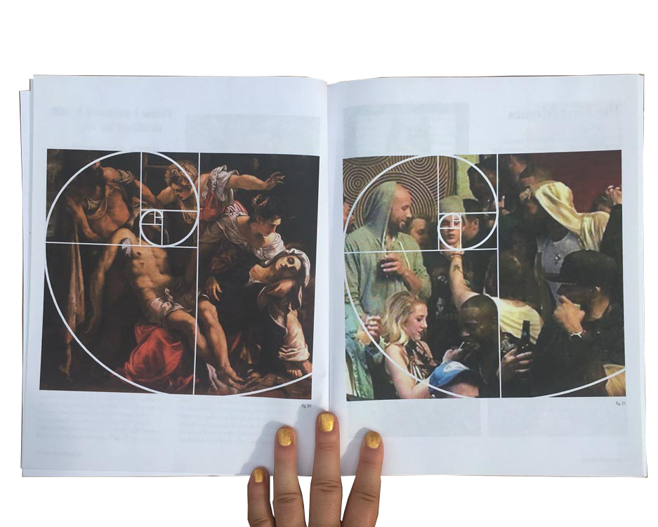
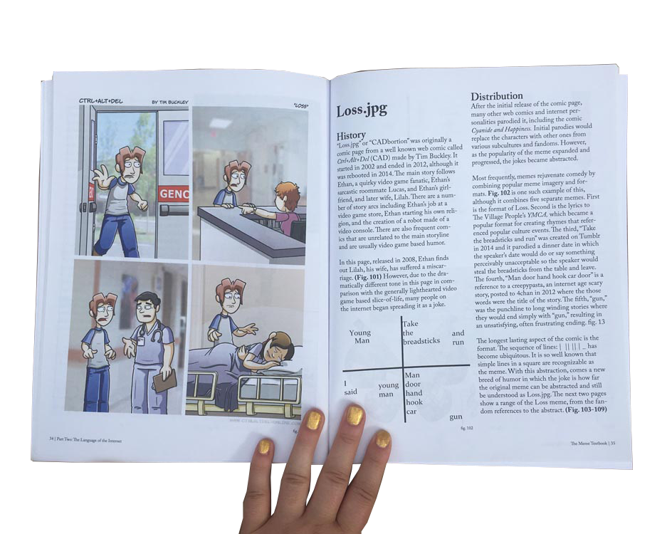
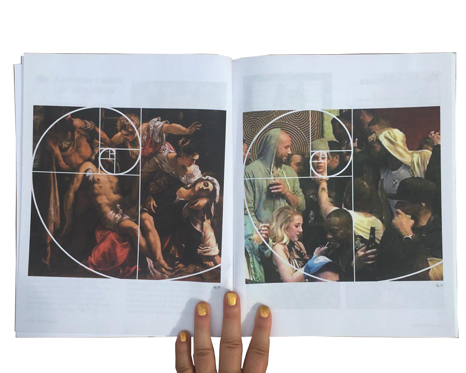
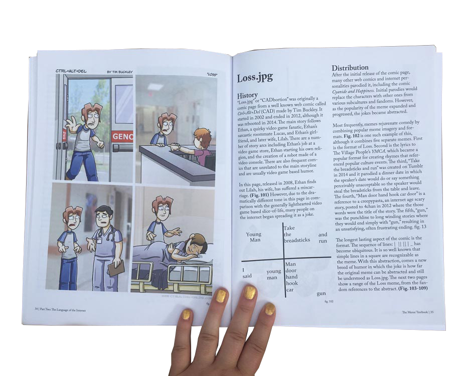

if you haven't guessed it, this is a meme textbook. you can read it online or check up on its progress with this google doc. my intent is to answer the question, what even are memes?
for background, the class project this came from was a catalogue of inspiration. we had to collect 100 images that inspired us then make a book. i noticed my images were about half web culture and half were traditional/academic. so i smashed them together and realized my dream of a textbook about memes.
so the book itself is actually two books (if i kept working on this, they would be chapters) enclosed in a hard sleeve. the first book covers the history of memes, starting long before the internet existed (think before 100 ad). it examines memes in art (isn't part of graphic design making memes) and the artistic precedence for the absurd (dadaism any1?). the first book ends by introducing early web memes, from godwin's law to rickrolling.
book 2 opens with a rudimentary analysis of language in memes and on the web at large (read my thesis for more on that). We move from 1337 to lolcats to surrealist memes, noting language, form, and intent of each era. theoretically this project is still active, and maybe one day i'll actually keep writing it, but future content would include commercial meme use, effect and content distinction of platform, memes across cultures, and the meta/post ironic schism.
(if u want to collab on this hmu)
 


